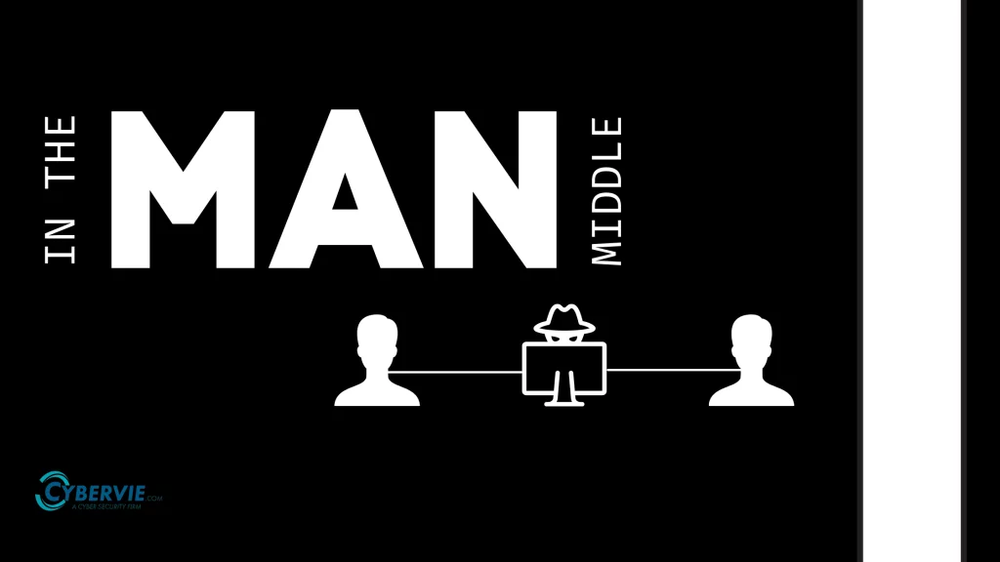

Man in the Middle Angriffe
DDoS-Angriffe
Ein DDoS-Angriff (Distributed Denial of Service) ist ein Angriff, bei dem eine grosse Anzahl von Anfragen an ein Netzwerk oder eine Website gesendet wird, um diese zu überlasten und unerreichbar zu machen. Das Ziel eines DDoS-Angriffs ist es, den Zugriff auf die betroffene Website oder den Dienst zu verhindern, indem der Server mit mehr Datenverkehr überflutet wird, als er verarbeiten kann.
Funktionsweise eines DDoS-Angriffs
Bei einem DDoS-Angriff arbeiten viele Geräte, die oft Teil eines Botnets sind, zusammen, um den Angriff durchzuführen. Diese Geräte senden eine enorme Menge an Daten oder Anfragen an das Ziel, sodass dessen Ressourcen erschöpft werden. Der Angriff kann die Website oder den Dienst für legitime Benutzer unzugänglich machen.
Arten von DDoS-Angriffen
- Volumenbasierte Angriffe: Sie überfluten das Ziel mit riesigen Datenmengen, um die Bandbreite des Netzwerks zu erschöpfen.
- Protokollbasierte Angriffe: Sie zielen darauf ab, die Netzwerkprotokolle so zu überlasten, dass sie das Ziel lahmlegen.
- Anwendungsbasierte Angriffe: Diese konzentrieren sich auf spezifische Schwachstellen in der Webanwendung, um den Server zu überlasten.
Schutzmassnahmen
Es gibt verschiedene Möglichkeiten, sich gegen DDoS-Angriffe zu schützen. Dazu gehören der Einsatz von Firewalls, die Überwachung des Netzwerkverkehrs und der Einsatz von speziellen DDoS-Schutzlösungen. Auch das Verhindern von Botnetzen und das Verteilen des Datenverkehrs auf mehrere Server können dazu beitragen, die Auswirkungen eines Angriffs zu minimieren.
Fazit
DDoS-Angriffe sind eine ernsthafte Bedrohung für die Verfügbarkeit von Online-Diensten. Durch geeignete Sicherheitsmassnahmen können Unternehmen ihre Netzwerke besser vor solchen Angriffen schützen.